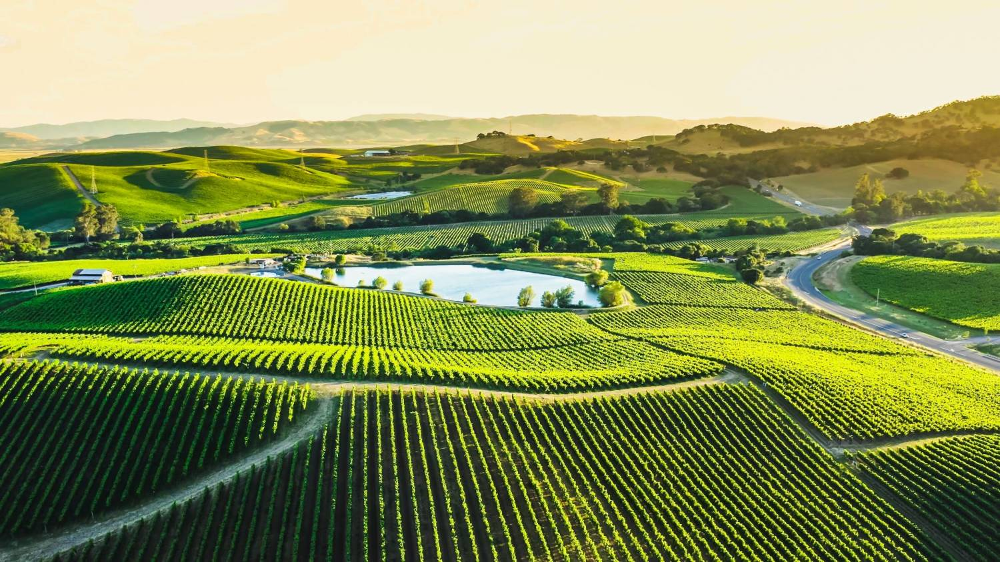
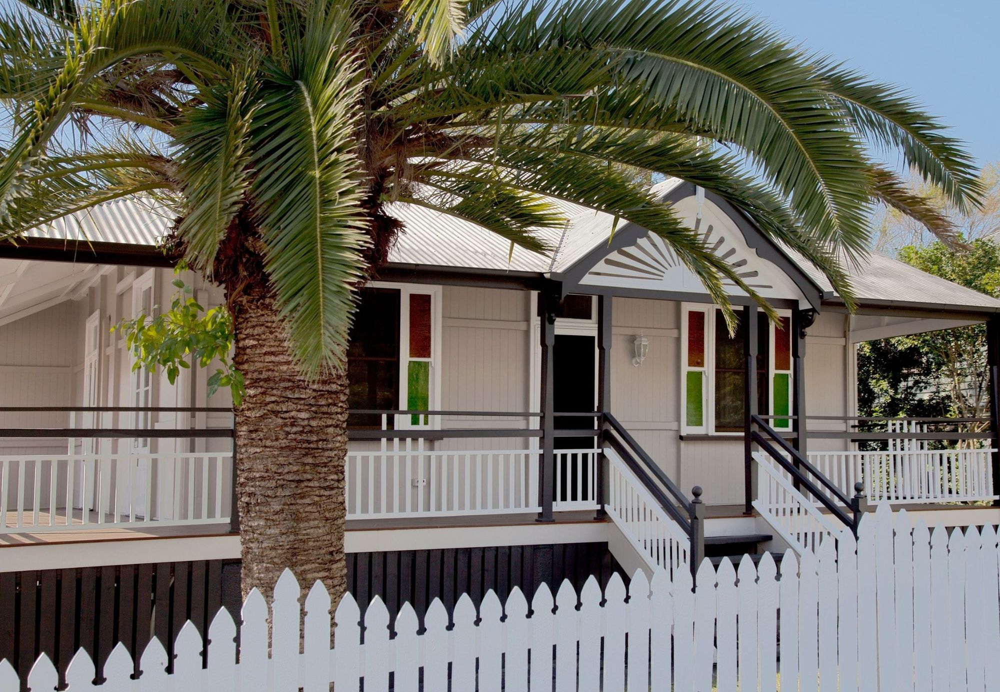
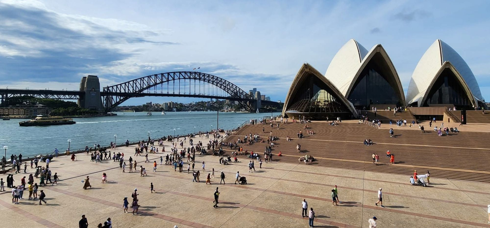

Not sure where to start? Ask Ethicare
Not sure where to start? Ask Ethicare 


I’m glad you’re here
I worked and travelled in Australia for a year, and I’ve lived in New Zealand too.
What I love about Australia is how much of life happens outside. The weather makes it easy — you eat outdoors most of the year, the beach is part of an ordinary week rather than something you save up for, and people build their time around being out in it. The big cities are properly diverse, and it’s no surprise that three of the world’s ten most liveable are Australian.
And the birdsong. Stepping outside and hearing such different sounds made even a familiar morning feel special. Alongside the beaches and the scenery, it’s the small, everyday pleasures that gradually become part of your life — that, and coffee taken almost as seriously as the Italians do.
That’s the life. The rest of these pages are the practical half — the registration, the costs, the schools, the distance from the people you’re leaving behind. Tell us what appeals to you and what’s worrying you, and we’ll start there.

Find your profession
Our Australian recruitment is specialist: medical imaging, radiation therapy, nuclear medicine and radiology. Each guide is the single home for that role: the Ahpra pathway, the documents, what the work is like, and indicative pay. Our pathway checker covers more than twenty professions, well beyond the five we place into, so you can get an answer whether or not we can find you the role.
Sonographers
ASAR accreditation, the pathway in order, and indicative pay.
ExploreRadiographers
Ahpra registration for diagnostic radiographers, and what the role is like.
ExploreRadiation therapists
Recognition of your training, scope of practice and indicative pay.
ExploreNuclear medicine
The registration route for technologists, and what to expect from the work.
ExploreConsultant radiologists
Specialist registration, recognition of training, and the private-market picture.
ExploreA different healthcare profession
These five are what we recruit into Australia today. More are in development — tell us yours and we’ll let you know when it’s live, or go straight to the body that registers you.
Why Australia?
A move this big is about far more than the job.
Registration is national for the Ahpra-regulated professions: register once with your national board and every state and territory is open to you, which is what makes the choice so wide. Sonography is the exception — it is accredited through ASAR rather than registered with Ahpra, with the same freedom to work anywhere once accredited. Alongside the public system sits a substantial private sector, so the range of roles, and what they pay, is broader than most clinicians expect.
On the measures that describe a life rather than a job, Australia sits in the top ten worldwide for human development, and life expectancy is among the highest anywhere. If you have children, the schooling picture is reassuring: Australian 15-year-olds perform above the OECD average in maths, reading and science.
The distances are real — Perth to Sydney is a four-hour flight, and going home is further still — and renting in Sydney or Melbourne is among the most expensive in the world; the same salary buys a noticeably different life in a regional service. What people say they love once they are here, what nobody puts in the brochure and how the distance feels are the same conversation in either country.

“Not giving up being a radiographer. Not escaping the NHS. Not reinventing myself. Just doing the job I love somewhere that gives me the kind of life I’d always imagined outside it.”
Practising in Australian healthcare
Beyond the registration and the paperwork, the culture of practising here is part of what draws people. Three things clinicians mention again and again. Your profession guide goes deeper for your specific role.
Public, private or community
You might be in a public health service, a private provider, or community and primary care. Plenty of roles mix them, and the setting shapes the pace and variety of your week.
Registered nationally
For Ahpra-regulated professions, registration is recognised in every state and territory; sonographers’ ASAR accreditation is national in the same way. If you move interstate in five years’ time, you do not go back to the beginning of the process.
Collaborative and fairly flat
First-name terms, multidisciplinary teams as the norm, and, from the clinicians we work with, a pace that feels less rushed than the one they left.
Will Ahpra recognise my qualification?
It depends on your profession, where you trained and how long you have been practising. Answer a few questions and we show you the pathway most likely to apply, and what Ahpra will want to see.
National registration, state pay
Public salaries are set state by state through enterprise agreements between each health service and the union, so the same role can sit on a different scale in Perth and Brisbane. The private sector negotiates individually and often pays more.
Explore Australia, state by state
Explore the hospitals, suburbs, cost of living and lifestyle in each state. The gap between them is wider here than almost anywhere.
For visas, registration, Medicare, tax, renting and schools, see our Moving to Australia guide.
The life waiting on your days off
What surprises people is not the weather. It is the range: the same career can put you on a harbour, in the tropical north, or twenty minutes from open country.

Can my family come too?
For the healthcare professionals we work with, partners are usually included on the visa with full work rights, children can come with you, and many roles open a route to permanent residence.
The route depends on your profession and circumstances. One thing worth checking early: schooling is run by the states, and some of them charge fees to families on temporary visas. It is a number in the first-year budget, and better known now than later.
Help me understand. Help me plan my move.
Two things we built for exactly this decision, both free, whether or not your job comes from us.
Help me understand
Ask anything about working, registering or moving to Australia, the way you’d ask someone who has done it. It answers from our own guides and points you at the page you needed.
“Will my registration transfer to Australia?” · “Could my partner work on my visa?” · “Where would suit a family with two careers?”
Ask Ethicare
Help me plan my move
The whole move, sequenced — registration, visa, money, the people coming with you, the first month — in the order it actually happens, saved as you go.
Eight stages. Start at whichever one you are at.
Open Plan EthicareRoles across Australia
Have a look at what is live now, or tell us your profession and where in Australia you are drawn to, and we will let you know when something fits.
Not ready to look yet? Talk to us — whether you are curious or close to deciding, there is no pressure in a conversation. You can also register your interest and hear from us when something suits.